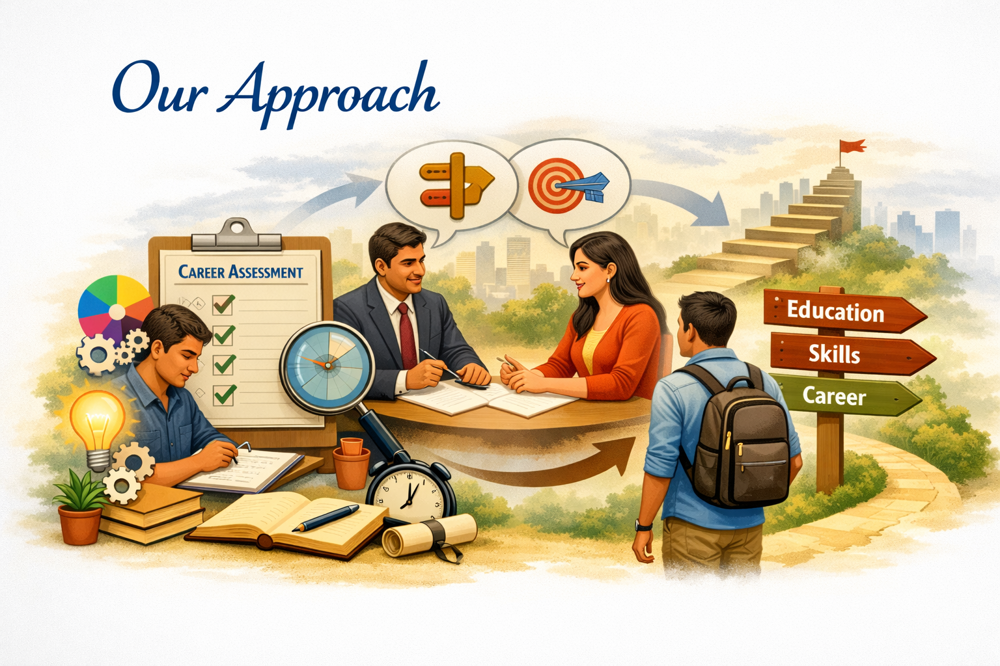
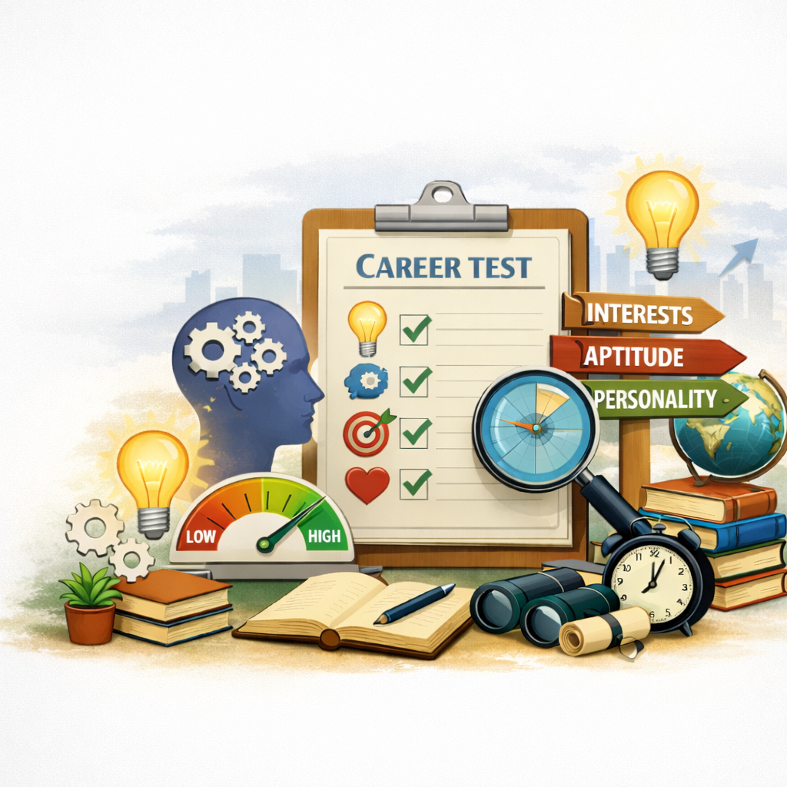

About Golden Career Consuling Institute
At Career Guidance GCCI, we are committed to helping individuals discover and pursue meaningful career pathways at every stage of their journey. Our initiatives support school students as they explore their interests and strengths, college students as they prepare for higher education and professional choices, and working professionals as they seek growth, transition, or renewed direction. We emphasize holistic career guidance rather than short-term outcomes, using scientifically validated psychometric tests and personalized counseling to uncover individual potential. By combining structured pathways with expert mentorship, Career Guidance GCCI empowers learners to make confident, informed decisions that align with their aspirations. Our mission is to nurture clarity, purpose, and lifelong growth—guiding every individual toward a brighter future.
Talk to a counsellorOur approach
- Discover through assessments Begin with psychometric tests and self-exploration tools to uncover interests, strengths, and personality traits.
- Interpret with expert counseling Engage in personalized sessions where counselors help interpret results, clarify pathways, and align choices with aspirations.
- Plan structured career pathways Develop a clear roadmap tailored to school students, college learners, or professionals, ensuring long-term growth and adaptability.

Meet the team
Lead counsellor with 8 years experience in school guidance and entrance exam prep.

Career coach for commerce and vocational pathways.
Career coach for commerce and vocational pathways.

Psychometric Tests: Unlocking True Potential
Psychometric assessments or career tests, as referred commonly, are standard scientific tests used to measure individual's mental capabilities, cognitive abilities & behavioral style. These tests are designed to measure your affinity for a course, stream or role based on the required personality characteristics and aptitude for the same. These Psychometric Career Assessments are designed specially to answer to your career related questions.
There are no wrong answers to any of the questionnaire.
Our Psychometric Career Assessment are based on universally accepted Career Test theories on Interest, Aptitude, Personality and Motivation assessments. These Psychometric Career Assessments are further fine tuned to suit the Global standards by a panel of Career Counsellors, Psychologists and Research team. And the report is made easy to understand, so that even a person who is just Class 9th or 10th can be easily understand and take action based on them. These Psychometric Career Assessment are further refined and updated regularly by the inputs of our more than 1100 career counsellors who use them regularly to assess their students.
Aptitude Tests: Unlocking True Potential
Unlike academic exams, an aptitude test does not categorize students into "pass" or "fail." No preparation is required, because the test is designed to measure natural abilities, personality traits, and interests. Students simply answer multiple-choice questions based on what feels right to them, reflecting their genuine inclinations rather than rehearsed knowledge.
What Aptitude Tests Assess
These tests evaluate a range of core abilities that form the foundation of career success:
- Numerical Ability – Essential for careers in engineering, accountancy, and finance.
- Verbal Ability – Critical for management, arts, communication, and social sciences.
- Spatial Ability – Needed for architecture, design, and creative visualization.
- Reasoning Ability – Important for engineering, science, and analytical fields.
- Rapid Evaluation – Required in professions like CA and engineering, where quick judgment is vital.
- Cognitive Ability – The skill of explaining concepts in one's own words, relevant across all disciplines.
- Social Ability – The capacity to collaborate, communicate, and work effectively with others.
Role of Career Counselors
An expert career counselor helps interpret these abilities and explains how different combinations can guide students toward the right career path. The counselor considers not only abilities but also interests, personality, study habits, and family background. This holistic approach ensures that career decisions are based on the student's authentic strengths rather than external pressures.
Why This Matters Today
Too often, career choices are influenced by peer pressure, media hype, or temporary market booms. Students may chase professions because a friend succeeded, or because a glamorous career was highlighted in the news. Parents, driven by love, sometimes support these whims without questioning whether the child has the aptitude to succeed.
Aptitude testing and counseling provide a reality check. They help parents and students move beyond trends and focus on what truly fits the child's profile. This is not about limiting dreams—it is about aligning them with abilities so that success becomes sustainable.
Personal Impact
Through such tests and counseling, I have guided many parents and students to discover careers that matched their strengths. The relief parents feel when they see a clear roadmap, and the confidence students gain when they understand their own abilities, are proof that this process is today's most urgent need in career planning.
Book a session to discover your aptitude